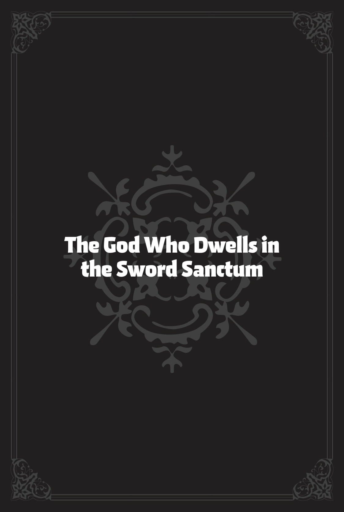
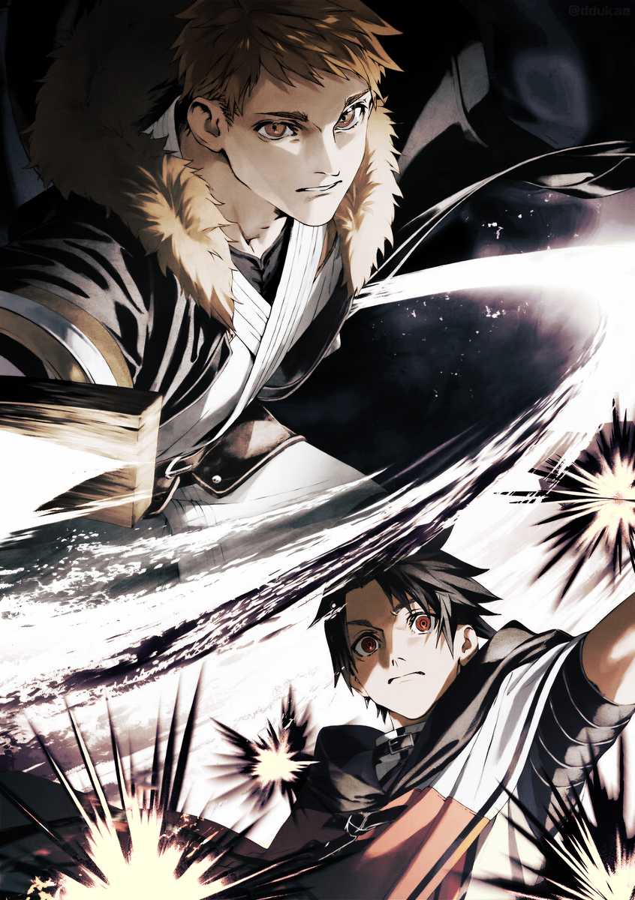

O gün, Kılıç Tapınağı’nın antrenman salonunu ziyaret ettim; duyduğuma göre buraya “Fani Salon” deniyormuş.
Sağımda Alec vardı. Gülümsüyordu ve zerre kadar düşmanlık belirtisi göstermiyordu. Belinde, benim yarattığım kara taştan bizzat Cevher Tanrısı’nın dövdüğü iki elli kılıcı taşıyordu. Özel bir gücü yoktu ama—yapımcısının adındaki “tanrı”dan bekleneceği üzere—kaliteli bir kılıçtı. Alec, neredeyse iki metrelik bu kılıcı beğenmişti ve artık düzenli olarak yanında taşıyordu. Solumda ise Orsted duruyordu. Siyah miğferini çıkarmamıştı ve tek kelime etmiyordu. O kadar hareketsizdi ki onu bir karton maket sanabilirdiniz. Üzerine bir sinek konmasını falan bekledim ama o kadar göz korkutucuydu ki bir sivrisinek bile yanına yaklaşmaya cesaret edemezdi. Bizim dışımızda burada olan diğer insanlar ne bana, ne Alec’e ne de Orsted’e bakıyordu. Bakışları önümdeki kişiye sabitlenmişti: Eris. Elinde tahta bir antrenman kılıcıyla duruyordu. İfadesi ciddiydi ve kızgın görünmüyordu ama kılıcını ne kadar sıkı kavradığını herkes görebilirdi.
Fani Salon’un ortasında Eris. Ayaklarının dibinde ise bileği kırılmış bir Kılıç Azizi yatıyordu.
“Pes ediyorum,” diye mırıldandı en sonunda. Acı bir ifadeyle ayağa kalkıp başını eğdi. Eris’in cevabını beklemeden salonun kenarına geri çekildi.
Antrenman salonunun kenarında bir dizi Kılıç Tanrısı savaşçısı duruyordu, görünüşe göre yaklaşık yirmi kişiydiler. Hepsinin Kılıç Azizi olduğunu düşününce dünya ne kadar da küçük geliyordu. Sanki küçücük bir alana koca bir dünya sıkıştırılmış gibiydi.
Eris’in karşısında genç bir adam ve kadın oturuyordu. Adam muhtemelen benimle aynı yaştaydı, ama emin değildim. Böyle söyleyince ona “genç” deyip diyemeyeceğimden de pek emin olamadım. Yine de, Kılıç Azizlerinin çoğu otuzlu ve kırklı yaşlarındaydı, o yüzden sanırım genç sayılırdı. Yanında oturan kadının omzuna kolunu atmıştı ve Kılıç Azizlerine kıyasla—Orsted karşısında olmasına rağmen—rahat görünüyordu. Miğferi lanetin etkisini azaltıyor olsa da Orsted yine Orsted’di ve bu adam rahat davranıyordu.
Kılıç Tanrısı Gino Britz’den de bu beklenirdi zaten. Kolunda bir kızla otorite saçarken bizim aynı yaşta olduğumuza inanmak zordu. En azından ben, karımın omzuna kolumu atıp sırtını okşarken Orsted’in karşısına çıkamazdım. Zaten böyle bir şey yapsam yumruğu yerdim—çoğunlukla Eris’ten. Arada sırada göğüslerine uzandığımda Eris’in bana patlatmasından rahatsız olduğum söylenemezdi gerçi.
Kadının adı Nina’ydı ve Eris’in Kılıç İmparatoru rütbesine sahip bir arkadaşıydı. Ancak pek de “Kılıç İmparatoru” havası vermiyordu. Aksine, kocası Gino’ya mutlulukla yaslanmış, sadece eli göğsüne fazla yaklaştığında eline vuruyordu. Sanki bizi görmüyorlardı bile. Mide bulandıracak kadar aşıklardı.
Evet, bu kadar gergin bir duruma nasıl düştüğümüzü açıklamalıyım.
Mushoku Tensei’nin önceki bölümünde!
Toplanın kızlar ve erkekler! Benim adım Rudeus Greyrat! Hadi biraz eğlenelim!
Bugün, Kuzey Kıtası’nın en havalı ve ilgi çekici turistik noktasını ziyaret ediyorduk: Kılıç Tapınağı! Geleceği düşününce, Kılıç Tanrısı ile bir konuşma yapmam gerekiyordu, ayrıca Eris’in eski Kılıç Tanrısı ile olan geçmişiyle yüzleşmek vardı! Bu yüzden saygılarımı sunmaya ve tabiri caizse hesabı kapatmaya karar verdim. Geçen sefer şimdiki Kılıç Tanrısı ile konuşma fırsatım olmamıştı, bu yüzden bu benim resmi ziyaretimdi.
Bu yolculukta yanımda olan kişi—tahmin ettiniz—Eris’ti! Kılıç Tanrısı Stili hakkında bildiğim kadarıyla, bu ekolün uygulayıcılarının önce seni ikiye ayırıp sonra soru soran tipler olma eğilimindeydi. Geçen seferki gibi mümkün olduğunca az büyücü getirmenin en iyisi olacağını düşündüm. Elbette hepsinin ahlaklı insanlar olduğundan emindim ama Eris, Biheiril Krallığı’nda, şimdiki Kılıç Tanrısı’nın kayınpederi olan Gall Falion’u öldürmüştü!
Ne düşünüyorsunuz? Bundan sonra, içeri dalıp ondan bir iyilik isteyebilir miydim?
Doğrusunu söylemek gerekirse, oradaki atmosfere bağlı olarak konuyu hiç açmadan eve dönmeye hazırdım. Her şey olabilirdi! Bu yüzden sadece ikimizin gitmesini planlamıştım.
En azından planım buydu ama beni bekleyen şok edici bir gelişme oldu. Kılıç Tapınağı’na gideceğimi söylediğimde, Orsted oldukça anlamlı bir tavırla kendisinin de geleceğini söyledi. Bu anlam muhtemelen, benim çenemi tutamayıp Kılıç Tanrısı’nı kızdıracağımdan endişeleniyor olmasıydı. Başka bir deyişle, işleri berbat etme ihtimalime karşı geliyordu. Her iki durumda da hayır demek için bir sebebim yoktu, bu yüzden kabul ettim. Orsted yanımda olması güven veren biriydi.
Orsted gittiği için, Alec de gitmekte ısrar etti. Hani şu kahraman olma takıntısı biraz fazla olan, ortamı okumakta en az Cliff’in eski hâli kadar kötü olduğunu kanıtlamış olan adam mı? Evet, o Alec!
Kişisel olarak, “Üzgünüm, sorun çıkaracak kimseyi alamam,” demek isterdim. Sieg ile sık sık ilgilendiği için Alec’e minnettardım ama bu bambaşka bir konuydu.
Orsted-sama, “Nasıl istersen,” dedi. Böylece karar verilmiş oldu. Eris, Orsted, Alec ve ben, hep birlikte Kılıç Tapınağı’na gidecektik.
Ve gittik! Vardığımızda, bizi karla kaplı sakin bir köy manzarası karşıladı. İçimde biraz gerginlik vardı ama daha önce de buraya gelmiştim ve bu sefer yanımda üç güvenilir yoldaşım vardı.
“Ne harika bir manzara. Bir köy için oldukça iyi bir kılıç seçkisine sahipler. Ah, işte ilk köylüyü gördüm!”
Metanetli yoldaşlarımın yanında titrerken, Kılıç Tanrısı’nın ana antrenman salonuna varana kadar kendi kendime konuşarak ilerledim.
Gülümseyen bir grup Kılıç Azizi bize Fani Salon’u gösterdi. Herkes hoştu ve ortam dostane görünüyordu. Ama nedense sırtımdan aşağı bir ürperti inmişti.
Hepsi senin kuruntun! diye geçirdim içimden. Kılıç Tanrısı’na odaklan!
Tam o sırada Kılıç Azizlerinden biri konuştu. “Eğer bir sakıncası yoksa, önce önceki Kılıç Tanrısı’nı katleden Vahşi Kılıç Kralı Eris’in kılıcını görmek isterim.”
“Merhaba” demek için ne güzel bir yol ama?!
Ben daha arkamı dönemeden Kılıç Tanrısı omuz silkti. “Nasıl isterseniz,” dedi.
Kıyamet o an koptu.
Gülümsemeye devam etseler de gözlerinin arkasından düşmanlık saçan Kılıç Azizleri, Eris’e meydan okumak için harekete geçti. Evet, dostane görünüyorlardı ve alıştırma kılıçları kullanıyorlardı ama kötü niyetlerini görebiliyordum. O tahta kılıçları, alıştırma bahanesiyle Eris’i öldüresiye dövmek için kullanacaklardı. Hiç geri durmayacakları bir bakışta belliydi.
Ama Eris de teknik olarak bir Kılıç Tanrısı sayılırdı. Birkaç Kılıç Azizi’nden fazlası gerekirdi onu alt etmek için. Kendisine saldırmaya kalkanların karşısında durumu kolayca lehine çevirdi. Birini, sonra bir diğerini yere serdikçe Kılıç Azizleri’nin gülümsemeleri nefret dolu hırlamalara dönüştü. Kötü niyetlerini artık saklamıyorlardı. Tüm bu karmaşanın ortasında sadece tek bir kişi tamamen sakindi: Gino. Nina bile Kılıç Azizleri’nin gözlerindeki öldürme arzusundan biraz rahatsız görünüyordu ama Gino’nun yüzünden zerre kadar umrunda olmadığı okunuyordu.
Neyse, ben yüzüme neşeli bir ifade takınıp neler olduğunu açıklamak için elimden geleni yaptım. Ne faydası olduysa!
Haaah. Midem ağrıyor. Nasıl bu hale geldi?
En başından batırdığımı hissediyordum. Buradaki havaya bakılırsa, bu işin sonu yoktu. Sadece açıklama yapmak için bir şans istemiştim ama artık konuşma ihtimali tamamen ortadan kalkmıştı.
Onu durduracak vaktim olmadı! Bilirsiniz, o gerçekten çok hızlı!
Cidden, Gino’nun “Nasıl isterseniz” demesi bitmeden, Eris elinde tahta kılıcıyla tereddüt etmeden öne atılmıştı. Eğitim salonunun ortasında daha fazla Kılıç Azizi bekliyordu. Ben şimdi durduğum yere çömelene kadar geçen kısa sürede, Eris onlardan birini çoktan indirmişti bile. Sonra bir grup Kılıç Azizi daha öne çıktı.
“Sıra bende!”
“Sıradaki rakibin benim!”
Biri devriliyor, diğeri öne atılıyordu. Bu neydi böyle?
Bu küçük maskaralığı bitirme vaktinin geçtiğini hissettim. Yirmiden biraz fazla Kılıç Azizi vardı ve Eris neredeyse hepsini indirmişti. Hayır, aslında sonuncusuyla dövüşüyordu, bu da sıranın Kılıç Tanrısı Gino’ya geleceği anlamına geliyordu. Şimdilik her şeyin üzerinde oturuyordu ama adamları saf dışı bırakılırsa kendisi öne çıkmaktan başka çaresi kalmayacaktı. Kılıç Azizleri muhtemelen Kılıç Tanrısı’nın kızıl saçlı kılıç ustasını öldüreceği anı bekliyorlardı. Önceki Kılıç Tanrısı’nı öldüren kişiden intikam almak istiyorlardı. Bunun için can attıklarını açıkça ilan etmişlerdi. Bu, bir infazın başlangıcıydı.
Seçimlerimden pişmanlık duyuyordum. Belki de buraya gelmek kötü bir fikirdi. Eris bile Kılıç Tanrısı ile yapacağı bir dövüşten yara almadan kurtulamazdı ve bu mesafeden onunla dövüşmemin imkânı yoktu. En azından her şey kötü değildi. Benim reflekslerim çok yavaş kalabilirdi ama Orsted ve Alec benim için Kılıç Tanrısı’nın kılıcını durdururdu. Eris biraz yara alabilirdi… ama yaşadığı sürece şikâyet etmezdim. Eris ne olursa olsun hazırlıklıydı. Her halükârda, bizimle geldikleri için minnettardım.
Tek sorun, Eris ile Kılıç Tanrısı arasındaki bir düelloya müdahale edersem, müzakere diye bir şeyin söz konusu olamayacağıydı. Tam olarak ne olacağından emin değildim… ama ne olursa olsun, şimdiden midemin ağrımaya başladığını hissedebiliyordum. Bu işi durdurmalı, sonra da konuşabileceğimiz bir zemin hazırlamanın bir yolunu bulmalıydım. Benim görevim buydu.
Dinle beni, Rudeus. Onlar fevri bir grup olabilir ama onlarla gerçekten konuşmaya çalışırsan dinlemelerini sağlayabilirsin. Elinden gelenin en iyisini yap, anladın mı? Haydi bakalım!
“Öf… teslim oluyorum.”
Tam o sırada son Kılıç Azizi de düştü. Tıpkı bir öncekiler gibi o da bileğini tutuyordu. Düşününce, hepsi aşağı yukarı bileklerini tutuyordu. Bazıları sol, bazıları sağ bileğini ama Eris teknik değiştirmeye bile tenezzül etmemişti. Bu yüzden fazladan öfkeli olmalarına şaşmamalı.
Sırada Nina mı vardı? Ama Nina pek yakında hareket edecek gibi görünmüyordu. Nedenini söyleyemezdim ama sıradakinin Kılıç Tanrısı olacağını hissediyordum. Kılıç Tanrısı harekete geçtiğinde, işte o zaman ben de hamlemi yapacaktım.
İyi izle. Bu Go-no-Sen (karşı saldırı) sanatıdır. Kılıç Tanrısı ayağa kalkar kalkmaz, işte o an kendimi yerlere atmaya hazır bir şekilde araya gireceğim! “Vay canına, ne kadar da muhteşem dövüşlerdi. İzlerken susadım valla. Bir mola verip bir fincan çay içmeye ne dersiniz?”
İşte böyle bir giriş yapacaktım. Yeterince pürüzsüz müydü? Onu kışkırtmaya çalışıyormuşum gibi görünmezdi, değil mi? Yenilen Kılıç Azizlerini öven bir şeyler söylemek daha iyi olurdu.
Vay be, siz Kılıç Tapınağı’ndakiler antrenmanlarınıza gerçekten de canla başla sarılıyorsunuz!
Evet, bunu kullanacaktım. Bu şekilde kendilerine, “Eh, bu bir antrenman. Bazen kaybedersin,” diyebilirlerdi.
Tamam, tamam. Hadi gidelim. Bu işi halledelim.
Bir anlık sessizlik oldu. Kılıç Tanrısı hareket etmedi, Nina da öne çıkmadı.
“Bitti mi?” diye sordu Kılıç Tanrısı Gino Britz, çıtırtılarla dolu gerginliğin ortasında havai bir tonla. “Şimdi, beni ne için görmeye gelmiştiniz?”
Ha? Sanki dövüşten önce beni dinleyecek gibiydi. Bu pek Kılıç Tanrısı Stili’ne uygun değildi ama benim işime gelirdi. Bir adım öne çıktım.
“Öncelikle özür dilemek isterim,” dedim.
“Ne için?” diye sordu Gino.
“Önceki Kılıç Tanrısı mevzusu için.” Bunu söyler söylemez, Kılıç Azizleri’nin etrafındaki havada bir değişiklik oldu, sanki nihayet bekledikleri konuya gelmişiz gibiydi.
Bize bir fırsat verdi! İşte an bu an! İntikam zamanı! Köpek olsalardı, havlayıp üzerimize atlamaya hazır olurlardı. Bir an için daha dolaylı mı olmalıydım diye düşündüm ama sonuç yine aynı olurdu. Gerçeklerden kaçış yoktu.
Kılıç Tanrısı’nın yüzünde şüpheli bir ifade vardı. Bunu görmek beni de tereddüde düşürdü. Garip bir şey mi söylemiştim? Neredeyse gergin bir şekilde etrafıma bakmaya başlayacaktım. Sonra, Gino anlamış bir tavırla başını salladı.
“Sen şimdi bahsedince aklıma geldi, sanırım Nina uzun zaman önce sana yardım etmekle ilgili bir şeyler söylemişti. Sanırım bir müttefikinin babasını öldürürsen, özür dilemen gerekir, ha?”
Sanki konuyla hiç alakası yokmuş gibi konuşuyordu. Kılıç Azizleri benden daha şaşkın görünüyordu.
“Ama ustam… yani önceki Kılıç Tanrısı Gal Farion, sizinle kendi özgür iradesiyle dövüşmeye gitti, değil mi? Asıl özür dilemesi gereken biz değil miyiz? Eğer bu tüm Kılıç Tanrısı Stili’ni ilgilendiriyorsa ve o size saldırdıysa, o zaman anlaşmayı bozan taraf biz oluruz. Bu arada, o iş ne oldu? Benim hiçbir şeyden haberim yok.”
Ona neler olduğunu sormak isterdim. Şu an gerçekten Kılıç Tanrısı Stili’nin başındaki adamla mı konuşuyordum? Ben daha çok, bilirsiniz, Atofe gibi laftan anlamayan birini bekliyordum. Bu adam belki de fazla rahattı. Garip bir histi, daha çok Kuzey Tanrısı Stili’nden biriyle konuşuyor gibiydim. Tabii Atofe hariç.
“Şey…” Sakin ol. Önce sorusuna cevap ver.
“O sadece Nina ve Eris arasında bir konuşmaydı—herhangi bir resmi anlaşmaya varılmadan önceydi. Aslında buraya daha önce bir kez geldim ama meşgul olduğunuz söylendiği için geri döndüm… Nina’nın size bundan bahsettiğini sanmıştım?”
“Bahsettim,” dedi Nina belli belirsiz başını sallayarak, “ama o zamandan beri konusu açılmadı.”
“Mm,” diye onayladı Gino. “Ejderha Tanrısı Orsted’e karşı durduğumuzla ilgili hiçbir şey duymadım. Bununla birlikte, eğer sizinle dövüştüyse…” Gino’nun gözleri kısıldı. “Görünüşe göre selefim size karşı çıkmış, öyle mi?”
Kılıç Azizleri’nin şevki kabardı. Zihinlerinden geçenleri adeta duyabiliyordum: Tamam, duydunuz onu! Kılıçlarınızı çekip dövüşme zamanı! Hadi, acele edin!
“Bekleyin,” dedim aceleyle. “Sakin olursanız…”
Gino kaşlarını kaldırdı. “Sana sinirli mi görünüyorum?”
“Hiç de değil! Tam bir sükûnet abidesisiniz! Bakın, mesele şu ki, biz buraya özür dilemek ve sizinle düşman kalmadığımızdan emin olmak için geldik. Kılıç Tanrısı Stili’nin güçlü savaşçılarıyla düşmanca bir ilişki içinde olmak hiç istediğimiz bir şey değil. Güçlü insanlarla dostane ilişkiler kurmayı severiz. Size dostluk sunmaya hazır bir şekilde buradayız. Kılıçların ve yiyecek malzemelerinin dağıtım kanalları, altyapı bakımı ve hatta inşaat konularında yardım sunabiliriz. Buna karşılık, bize karşı durursanız, bu şeyleri kesebiliriz. Bu her açıdan kötü olur. Değil mi?”
Tüm bunları bir çırpıda söyledikten sonra Gino iç çekti.
Belki biraz fazla uzatmıştım. Aklımda Atofe’yi canlandırdığım için, daha kısa kesmeliydim. Ama bu adam, sırf ona çok nadir bir şişe şarap buldum diye, “Elbette, müttefikin olacağım!” deyip dönecek kadar basit biri gibi görünmüyordu.
Gino beni süzdü, sonra konuştu. “Anlaman için hecelemem mi gerekiyor? Selefim bana bir kin meselesinden bahsetmedi. Bu, sizinle dövüşme kararının tüm Kılıç Tanrısı Stili adına değil, kişisel olduğu anlamına gelir. Bizimle hiçbir ilgisi yok ve bu yüzden dövüşmeye niyetim yok. Bu benim için bundan daha önemli.”
Bunu söylerken Nina’yı kendine doğru çekti ve yüzünü saçlarına gömdü. Nina’nın yanakları pembeleşti ama onu durdurmadı.
Onun için deli olduğunu anlıyorum ama belki bunu toplum içinde yapmamayı düşünebilirsin? Baksana, Eris kıpkırmızı oldu! Gözleri yuvalarından fırlayacak gibi. Ayrıca kollarını kavuşturmuş ve ayaklarını iki yana açmış, dövüşmeye hazır bir haldeydi.
Cidden, konuştuğum kişi Kılıç Tanrısı mıydı? Zeki cevapları beni ürkütüyordu. Bu tüyler ürperticiydi. Yüksek rütbeli Kılıç Tanrısı Stili uygulayıcıları daha çok “Ne saçmalıyorsun lan sen? Kes zırvalamayı! Babama yaptığının bedelini canınla ödeyeceksin!” diye bağıracak tipler olurdu. Sonra da sana saldırırlardı. Değil mi? Dur, onu boş ver. O Atofe’ydi—yani, Kuzey Tanrısı Stili. Ama aşağı yukarı aynıydılar, değil mi?
Aklıma bir düşünce geldi. Belki de karşımdaki bu adam, diplomatik ilişkilerden sorumlu ofisten biri gibi bir dublördü.
Ne olursa olsun, böyle hissetmesine minnettardım. Akrabalarından birinin öldürülmesini bu kadar umursamaması garip olsa da… Sanırım durumu değerlendirmiş ve kendi hisleri yerine geleceğe öncelik vermeye karar vermişti. Bu bana mantıklı geldi. Bahse girerim ki her şeyi enine boyuna düşünmüş ve kararını çoktan vermişti.
“Bu durumda, izin verin de—”
“Bekle!” diye bağırdı Kılıç Azizlerinden biri ayağa fırlayarak. Yüzü kıpkırmızıydı ve bizi—hayır, Orsted’i işaret ediyordu.
“Hepimiz eski Kılıç Tanrısı’na hürmet ederdik! Onun kılıcını kullanışını izleyerek öğrendik, çalıştık ve güçlendik! Ve onlar onu öldürdü! Tam şuradaki insanlar! Öylece duracak mıyız?! Her şeyimizi borçlu olduğumuz adamı öldürdüler! Kılıç Tanrısı Stili’ni aleme rezil mi etmek istiyorsun?!”
“Pekâlâ, o zaman devam et,” dedi Gino hiç duraksamadan. “Git gerçek bir kılıç al. Ben de seni izleyeceğim.”
Kılıç Azizi donakaldı. “Ne…?”
“Eminim buraya bir dövüşe hazır olarak geldiler. Bak, orada Vahşi Kılıç Kralı Eris, Ejderha Tanrısı Orsted ve Kuzey Tanrısı Kalman III var; arkalarında da onlara büyüyle destek olacak Rudeus Greyrat duruyor. Hepiniz aynı anda saldırsanız bile, tek bir darbe bile indiremeden sizi silip süpürürler.”
“Ama…”
“Hadi, işe koyul. Bedeninle güzelce ilgileneceğimden emin olabilirsin, hatta sana bir cenaze töreni bile düzenlerim. Ölümlerinizin Kılıç Tanrısı Stili’nin onurunu korumaya bir faydası olur mu bilemem ama eminim cesetleriniz tatmin olacaktır.”
Kılıç Azizi bir an sessizce orada durdu, sonra bastırılmış bir hüsranla yumrukları titreyerek geri oturdu. Ardından, titrek bir sesle, “Bizim… onlara uymaktan başka çaremiz yok mu? Dövüşmeden, eski Kılıç Tanrısı’nın intikamını almadan…” dedi.
“Ben de sana onu söylüyorum işte—eğer hoşuna gitmiyorsa, git kılıcını al. Hiçbirinize hiçbir şeyi zorla yaptırmayacağım. Ne isterseniz onu yapın. Tıpkı babam ve diğerleri gibi.” Gino bu konudan bıkmış gibiydi.
Herhangi bir kinin kök salmasına izin vermek yerine onları çabucak yola getirme fikri hoşuma gitmişti—gerçi bunun bir ölüm kalım meselesi olması biraz sert görünüyordu.
Tam o sırada Eris konuştu. “Bütün Kılıç İmparatorları gitmiş, ha?”
Gino ona doğru döndü. “Babam diğerleriyle birlikte Kılıç Tapınağı’nı terk etti. Görünüşe göre benim Kılıç Tanrısı olmamdan hoşnut kalmamışlar.”
Anlaşılan “Kılıç İmparatorları” tanımına Nina dâhil değildi. Gino’nun ifadesi, önceki Kılıç Tanrısı’nın doğrudan öğrencileri olan iki Kılıç İmparatoru’ndan bahsettiğini düşündürüyordu. Eris söyleyince, bu tanıma uyan kimseyi göremediğimi fark ettim.
“Şu an itibarıyla Asura’da, Milis’te ya da belki de Kral Ejderha Krallığı’nda kendi eğitim salonlarını açmışlardır diye tahmin ediyorum. Yani, sanırım ben de gidebilirdim.” Gino omuz silkti. “Neyse, sadece özür dilemek için mi geldiniz? Bunu yapmanız nazikçeydi ama dürüst olmak gerekirse neden zahmet ettiğinizi pek anlamadım.”
Ah, be adam. Kimseyi kötülemek gibi olmasın ama Gino biraz fazla—nasıl desem? Soğuk, felsefi ya da sadece tuhaftı.
“Hayır, dahası var,” dedim. “Uzun bir hikâye ama aslında İnsan-Tanrı denilen bir varlıkla savaşıyoruz…”
Bizimle İnsan-Tanrı arasındaki savaşın detaylarını anlattım. Her şey bir yana, Gino mantıkla konuşabileceğim bir adama benziyordu. Eğer kan dökülmeden bir anlaşmaya varabilirsek, ne âlâ! Heyecanı kaçmıştı ama olsun. Ona Kılıç Tanrısı gözlükleriyle bakmayı bıraktığımda, Gino aklı başında, hoş bir genç adamdı. İş birliğini sağladıktan sonra oturup bir fincan çay içebilir ve birbirimizi daha iyi tanıyabilirdik. O zaman o kadar ürkütücü görünmekten vazgeçeceğinden emindim.
“Sonuç olarak,” dedim, “gelecekteki girişimlerimizde Kılıç Tanrısı Ekolü’nün iş birliğini resmen talep etmek istiyorum.”
“Reddediyorum.”
Sen… ha? Cidden mi?
“Sizinle çalışmayacağım.”
Kılıç Azizleri’nden bir “Ooh!” sesi yükseldi ama onlar da benim kadar şaşkın görünüyorlardı.
“Yani, İnsan-Tanrı’nın tarafında olacaksınız, öyle mi?” diye sordum çekinerek.
“Hayır. Size karşı da çalışmayacağım.”
Pekâlâ…? “Yani tarafsız kalıyorsunuz? Nedenini sorabilir miyim?”
“Ustamin öğretilerine sadık kalmak niyetindeyim.”
“Ne öğretisi?”
“Ustam her zaman kendi çıkarın için güçlü ol derdi. Dürüst olmak gerekirse, uzun süre ne demek istediğini anlamadım. Buradaki kimsenin anladığını da sanmıyorum. Babam gibi Kılıç İmparatorları bile anlamadı. Nina’yı istediğimi fark ettiğimde, her şey benim için netleşti. Kılıç, kendin için kullandığın bir şeydir—tamamen kendi amacını yerine getirmek uğruna. Başka hiçbir şey için değil.”
Gino hızlı ve akıcı bir şekilde konuşuyordu ve sesinde, bilgeliğinin sarsılmaz gerçeğine inandığını gösteren bir kararlılık vardı.
“Bu yüzden,” diye devam etti, “sizinle çalışmayacağım. Kılıcımı yalnızca kendim için kullanırım. Yaptığım her şeyi kendim için yaparım.”
“Ailen tehlikede olsa bile kılıcını eline almaz mısın?” diye sordum.
“Alırdım. Eğer onları sevseydim, alırdım,” dedi Gino. Sonra, ilk defa, dosdoğru bana baktı. Bakışları güçlü ve emrediciydi, Eris’in anlattıklarının çizdiği resimle hiç alakası yoktu. “Yoksa benimle çalışmayı reddedersem ailemi öldüreceğini mi söylüyorsun?”
Eğitim salonuna buz gibi bir hava çöktü. Gino’nun sesi buz kadar soğuk ve neredeyse öldürücüydü. Bütün vücudumu soğuk bir ter bastığını hissettim. Yalnız olsaydım, muhtemelen altıma kaçırırdım. Bu, Kılıç Tanrısı Gal Farion’u bir anda yenerek o unvanı alan Kılıç Tanrısı’ydı. Tuhaf bir adamdı, evet, ama dünyanın en iyi kılıç ustalarından biriydi—hesaba katılması gereken bir güç. Bunu hissetmiştim.
“Hayır,” dedim ona. “Ben de ailemi seviyorum.”
“Oh? Bunu duyduğuma sevindim.” Sesindeki öldürücü ton kayboldu. “Görünüşe göre hakkında duyduğum her şeysin, Rudeus.”
“İnsanlar sana ne anlattı?”
“Ailen uğruna Ejderha Tanrısı’nın takipçisi olduğunu ve koca bir ülkeyi yerle bir ettiğini.”
“Hmm, genel hatlarıyla doğru sayılır. Gerçi hiçbir ülkeyi yerle bir etmedim.”
“Beklediğimden daha cesursun.” Gino’nun bakışları yanımdaki Eris, Alec ve Kılıç Azizleri’ne kaydı. Hepsinin eli kılıçlarındaydı. Hatta bazıları kılıçlarını çoktan çekmişti. Arkama bakmak için döndüm ama Orsted’in kılına bile dokunmadığını gördüm. Beklediğim gibiydi. Ben de hareket etmemiştim ama bu sadece Gino yüzünden hâlâ sarsılmış olmamdandı.
“Başka bir deyişle, güvenebileceğim bir adamsın,” diye devam etti Gino.
“Başka bir deyişle” ne anlama geliyordu ki?
“Tam da böyle bir adam olduğun için seninle çalışmayacağımı gönül rahatlığıyla söyleyebiliyorum. Kılıcım kendim ve sevdiklerim için savaşır, başka hiç kimse için değil.”
“Oh… Pekâlâ.”
Gino Britz’i şimdi daha iyi anlıyordum. O sadece sevdiği insanları kendi elleriyle korumak istiyordu—benden pek de farklı sayılmazdı. Ben bunu başaramamış ve kendimi Orsted’in merhametine atmıştım ama eminim Gino bunu başarabileceğini düşünüyordu. Dahası, haksız da sayılmazdı. Sadece başka bir şey yapmak için motive olmuş gibi görünmüyordu. Elbette, o hâlâ Kılıç Tanrısı’ydı; tarafsızlığını ilan etse bile bu, düşmanların ona gelmesini engellemezdi ama görünüşe göre daha fazlasını yaratacak bir yapısı yoktu.
Önceki Kılıç Tanrısı’nı neden sevdiği insanlar arasına dâhil etmediğinden emin değildim ama sanırım o farklı bir durumdu. O adam kendi kurallarına göre yaşamış ve ölmüştü. Gino’nun buna bir itirazı yok gibiydi.
“Hmm…”
Bu işi ona başka nasıl satacağımı bilemiyordum. Gino kendi içinde tamamdı. Biz İnsan-Tanrı ile savaşmaktan vazgeçmedikçe veya o da—benim gibi—tek başına gücüyle ailesini koruyamayacağını hissetmedikçe fikrini değiştirmezdi. Onu ikna etmeye ne kadar çalışırsam çalışayım, sadece havayı dövmüş olurdum. Kararını vermişti ve yerinden oynatılamazdı. Tam da Kılıç Tanrısı ekolünün başındaki kişiden bekleneceği gibiydi.
“Tamam,” dedim. “O halde, en azından İnsan-Tanrı rüyalarına girerse dikkatli ol. Her şeyin ailen için olduğunu söyleyerek yalan söyleyecektir ama onu dinlersen her şeyini kaybedersin.”
“Anladım,” dedi Gino.
İstemiyordum ama… geri çekilme zamanı gelmişti. Gino bize karşı çalışmayacaktı, bu da bir şeydi. Müttefikimiz olmayacaktı ama bir düşman da edinmemiştim. Nasıl bir adam olduğunu öğrendikten sonra, bana dürüst olacak kadar güvendiği sözüne inandım. Bu benim için yeterliydi.
“Eğer ben ölürsem ve yerime başkası geçerse,” diye ekledi Gino, “mutlaka geri gel. Bu benim kişisel kararımdan başka bir şey değil, anlıyorsun ya.”
“Teşekkürler, öyle yaparım.” Orsted’e bakmak için arkamı döndüm. O kaskın altında neler olup bittiğini kim bilebilirdi ki? “Bu size uyar mı, Lord Orsted?”
Yavaşça başını salladı. “Uyar.”
Bu iş bittikten ve Kılıç Azizleri’nin yaralarını iyileştirdikten sonra, sıra Alec ile bir antrenman seansına geldi. Bu da benim şeref konuğu olarak eğitim salonunun ön kısmına oturtulmuş, Alec’in Kılıç Azizleri ile serbest stil antrenman yapmasını izlediğim anlamına geliyordu. Kılıç Azizleri’nin elinde sadece alıştırma kılıçları vardı ama açıkça öldürmek için dövüşüyorlardı. Bahse girerim ki antrenmanın hararetiyle Alec’i öldürürlerse paçayı sıyırabileceklerini düşünüyorlardı.
Alec onları hiç zorlanmadan savuşturdu. Bununla birlikte, belki de bunlar Kılıç Azizleri olduğu için ya da belki dikkati dağıldığı için, bazıları ara sıra Işık Kılıcı ile ona bir darbe indirmeyi başardı. Ancak sonuçta kılıçları hâlâ sadece tahtaydı. Vurdukları anda tahta parçalandı ve Alec sıfır hasar aldı. O savaş aurası haksızlık derecesinde güçlüydü.
Ancak Kılıç Tapınağı’nda alışılmadık alıştırma kılıçları kullanıyorlardı. Görünüşe göre doğru ağırlığa daha yakın olmaları için demir gibi bir şeyden yapılmış bir çekirdekleri vardı. Savaş aurası olmadan, yanlış bir yere isabet eden bir darbe muhtemelen öldürmeye yeterdi. Hey! Bu, neden burada sadece Kılıç Azizleri olduğunu açıklıyordu. Sadece ileri seviye ve üzerindekiler bir savaş aurası oluşturabilirdi.
“Bu arada, Lord Orsted, neden benimle geldiniz?” diye fısıldadım yanımda duran Orsted’e.
“Gino Britz’e bir göz atmak istedim.”
“Yani onda her zamankinden farklı bir şey olup olmadığını mı?”
“Aynen öyle.”
Gino, her zamanki gibi yanında Nina ile birlikte sessizce antrenmanı izliyordu. Onun yanında Eris oturuyordu ve ikisi bir şeyler konuşuyorlardı. Ara sıra “Gal Farion” adını duyuyordum. Önceki Kılıç Tanrısı’nın ölümü hakkında konuştuklarını varsaydım.
“Ne düşünüyorsunuz?” diye sordum.
“Değişmemiş. Sadece kendisi için yaşama konusundaki kararlılığında tek düze bir inatçılık sergiliyor.”
“Ha.”
“Çocukken Gino dengesizdi, İnsan-Tanrı’nın sözlerinden etkilenmeye müsaitti. Şimdi, burada gördüklerimden sonra, endişelenmemize gerek yok.”
“Anlaşıldı.” Düşünüş şekline göre, düşman olmayan tarafsız bir parti, bir nevi müttefik gibiydi. Örneğin, bir mürit olma olasılığını azaltıyordu. Geleceğe hazırlanmamıza yardım etmeyecekti ama diğer ulusların hepsi de bu işe tüm enerjilerini vermiyordu. Önemli olan, İnsan-Tanrı’nın bir piyonu haline gelmeyecek olmasıydı. Elbette, istese de istemese de yine de bize karşı dönebilirdi… ama bir kere böyle düşünmeye başlayınca sonu gelmiyordu.
“Be-ben teslim oluyorum…!” Kılıç Azizlerinden biri yere yığılırken bir gümbürtü koptu.
“Sıradaki benim!” dedi bir diğeri, hemen ayağa kalkıp eğitim salonunun merkezine doğru ilerleyerek…
Bir sonraki an, tüm Kılıç Azizleri ya oturuyor ya da yere serilmiş durumdaydı. Her bir Kılıç Azizi yere devrilmişti. Bugün ikinci kez. Kuzey Tanrısı Kalman III gerçekten de bir başkaydı, ha?
Salonu bir sessizlik anı doldurdu.
Sonra, tam sonunda, ‘güçlüler özgür yaşar,’ dedi. Eris’in sesi sessizliğin içinde net bir şekilde çınladı. Kendi sesinin tınısıyla irkilerek başını kaldırdı. Ağzı anında sıkı bir çizgi halini aldı ve kendisine yaklaşan Kılıç Azizleri’ne tehditkâr bir şekilde baktı.
Yere bakarak mırıldanıyor ve Gino’ya yan gözle bakıyorlardı. “Çıraklarını kendi savaşlarında dövüştürüyor…” ve “Kılıç Tanrısı Stili’nin onuru umurunda mı sanki?” gibi yorumlar duydum.
Gino’nun ifadesi her zamanki gibi umursamazdı. Belki de her gün böyle şeyler duyuyordu.
“Antrenmanımıza katılmaz mısınız, Kılıç Tanrısı?” diye sordu Kılıç Azizlerinden biri, Gino’nun sessizliğinden faydalanarak. Yüzünde kocaman bir morluk yayılan bu adam, Alec’e ilk meydan okuyan kişiydi. Aynı zamanda daha önce Gino’dan beklemesini isteyen de oydu.
“Hayır. Ben burada iyiyim,” diye cevapladı Gino.
“Neden?!”
“Neden yapayım ki? Siz benden talep ettiğiniz için ondan sizinle antrenman yapmasını istedim. Eğer hepiniz yeterince dövüştüyseniz, o zaman bu iş bitmiştir.”
Kılıç Azizi’nin yüzü kasıldı ve öfkeyle titredi. Daha fazla dayanamayarak bağırdı: “Eski Kılıç Tanrısı ile işler daha iyiydi! O, Kılıç Tanrısı Stili’nin onurunu korurdu! Kim olurlarsa olsunlar buraya böyle fütursuzca girmelerine izin vermezdi! Kılıç İmparatorları’nın gitmesine şaşmamalı! Kılıç Tanrısı’sın ama bize yeteneklerini bile öğretmiyorsun! Bütün antrenmanlarını yapmak için tek başına gizlice kaçıyor, sonra da günlerce eğitim salonunda oturup kadın arkadaşınla flört ediyorsun! Bu insanlarla olan durumda da aynı şey! İntikamını kendin alman gerekirken, sana hizmetkârları olmanı istediklerinde onları ağırlıyorsun! Gururunu yutup daha güçlü bir düşmana boyun eğseydin, bu durumdan yine de daha iyi olurdu! Onun yerine, yarım yamalak bir tarafsızlık ilanı mı yapıyorsun?! Biz takipçilerini de mi düşman edinmek istiyorsun?! Senin neyin var?! Senin gibi bir Kılıç Tanrısı ne işe yarar ki?!”
Eğitim salonuna bir sessizlik çöktü. Gino’nun ifadesi değişmemişti. Eskisi kadar umursamaz görünüyordu—hatta boş bakıyordu. Sanki bu adamın neden bahsettiğini merak ediyor gibiydi.
Adam ise, aksine, çok fazla konuştuğunu anlamış gibi bembeyaz kesilmişti.
“Herkesin kılıcı kendisinindir. Benim için bir zafer sizin için bir zafer değildir, ne de sizin onurunuzu korur,” dedi Gino yumuşak bir sesle. “Önceki Kılıç Tanrısı’nı yendim çünkü Nina ve benim şu an sahip olduğumuz şeyi istiyordum. Bu yüzden böyle davranıyorum. Bunu kimsenin onurunu korumak için yapmadım ve sizin dadınız olmak istediğim için de yapmadım. Eğer hoşunuza gitmiyorsa, gitmekte serbestsiniz. Kılıç Tanrısı olmaktan vazgeçmek benim için sorun olmaz ama unvanı size devretsem, beni sürersiniz, değil mi? Gitmeye pek bir itirazım yok ama çocuklarımız henüz çok küçükken benim için kötü bir zaman.”
Kılıç Azizleri tekrar yere bakarken iç çektiler. Birinin, “Sorun bu değil! Neden anlayamıyorsun?!” diye bağırmasını bekledim. Salondaki enerji berbattı. Anlaşılan, Kılıç Tanrısı ile öğrencileri arasında işler pek iyi gitmiyordu. Gino’nun kendisinin de hâlâ genç olmasından mı kaynaklanıyordu? Bu adamlarla arasını düzeltmezse, kendini kolayca düşmanlarla çevrili bulabilirdi.
“Böyle yapmana gerek yok. Onlara en azından bir gösteri sunabilirsin.” Sessizliği bozan Nina oldu. Başını Gino’nun omzundan kaldırdı, dik oturdu ve bacaklarını altına topladı. “Ben de senin dövüşünü görmek istiyorum,” dedi.
“Pekâlâ! Sırf senin için, Nina.” Aynen böyle, Gino ayağa kalktı, sanki şimdiye kadarki tüm isteksizliği bir oyundan ibaretmiş gibiydi. Nina onu bu kadar mı parmağında oynatıyordu? Daha da önemlisi, bu şekilde değişebiliyorsa, akli dengesi yerinde miydi? En azından bana hiç de öyle görünmüyordu. Bu adam iyi miydi?
“Sen ne dersin, Eris?” dedi Nina. “Gino eskisinden daha güçlü.”
Buna karşılık, Eris de ayağa kalktı. “Tamam,” dedi. Bana baktı, sonra bir şey fırlattı. Düşünmeden yakaladım, sonra onun kılıcı—büyülü kılıç Windpipe—olduğunu gördüm. Önceki Kılıç Tanrısı’nın kullandığı kılıçtı.
Gino ve Eris, Alec’in durduğu eğitim salonunun merkezine doğru ilerlediler.
Omuz silkti. “Pekâlâ, önce kiminle dövüşüyorum?”
“Belli ki zayıf olanla,” dedi Eris, Alec’i geri iterek. Kabul edercesine başını salladı, sonra yanımıza geri geldi. Üzerinde bir damla ter yoktu. Onu hiç terlemiş görmemiştim, hatta… Dur, bu doğru değildi. Biheiril Krallığı’nda sırılsıklam olduğunu görmüştüm.
“Ne kadar da işe yaramaz bir sürü,” diye fısıldadı yanıma otururken. “Burada kendilerinden daha iyilerden öğrenme şansları var ama öğrenmeye niyetli değiller.”
“Evet, bunu ben bile görebildim.”
“Değil mi? Büyükannemin etrafında takılan o çeteden bile daha kötüler.”
Dürüst olmak gerekirse, Atofe’nin kişisel muhafızları için durum biraz farklıydı. Onlar için öğren ya da öl durumu vardı, bu yüzden güçlenmekten başka çareleri yoktu.
Bu düşünceyle başımı kaldırdığımda tam zamanında Eris’in tahta kılıcını kaldırdığını gördüm. Her zamanki gibi, kılıcını saldırgan bir duruşla başının üzerinde tutuyordu. Kılıç Tanrısı Gino arka ayağının üzerine çöktü, eli kılıcındaydı. Duruş Ghislaine’inkini anımsatıyordu ama Gino’nunki çok daha dingindi. Ghislaine o duruşa geçtiğinde, gözlerinde korkunç bir parıltıyla kuyruğunu sallar, avına dişlerini geçirmek için doğru anı bekler gibi olurdu. Gino ise aksine boştu. Tıpkı daha önceki Orsted gibi, o kadar hareketsizdi ki sanki zaman durmuş gibiydi. Hiçbir şey onu geçemezdi.
Eris yavaşça ona doğru ilerledi. Eğer daha önceki konuşmamız olmasaydı, yüreğim ağzıma gelirdi. Ona vurabilirdi ama ölmezdi.
Bu iş sorunsuz bitecekti, değil mi?
Belki de her ihtimale karşı Öngörü Gözü’mü açmalıyım. Ama iblis gözüyle bile onun kılıcının hareketini göremezdim. Ölümcül bir darbe indirmek üzere olsaydı Orsted’in onu durduracağına güvenebilir miydim?
“Başlama sinyaline ihtiyacın yoktur sanırım?” diye sordu Gino, Eris’e.
“Yok,” dedi.
Ve sonra, her şey bitmişti.
Eris, kılıç tutan eline bir darbe alarak tek dizinin üzerine çöktü. Tahta kılıcı havada dönerek eğitim salonunun duvarına tak diye çarptı.
İblis gözüyle görebildiğim tek şey buydu ve bir saniyeden kısa bir süre sonra bu gerçek oldu. Bana göre ilk hareket eden Eris’ti. “Yok” demesini bitiremeden kılıcının ucu çoktan bulanıklaşmıştı ama kaybetmişti. Gino daha hızlıydı ve vuruşu onun kılıç kolunu kırmıştı. Ama sadece kılıç kolu da değil. Eris’in ön ayağının başparmağı yanlış yöne bükülmüştü. Yani iki kez mi vurmuştu? Çoklu vuruşlu bir saldırı mı?
Eris’in kolu ve parmağı kırılmıştı ama geri adım atmadı. Onu durdurmak için bundan daha fazlası gerekirdi. Sağlam bacağıyla ileri atıldı, yüzünde vahşi bir sırıtış vardı… ve sonra, aniden gevşedi ve teslim oldu.
“Bu kadar yeter,” dedi Orsted, sesi salonda çınlayarak. Bunun üzerine insanlar hayranlıkla “Vay be” gibi sesler çıkarmaya ve “İnanılmaz!” gibi şeyler söylemeye başladılar. Ama onlar azınlıktaydı ve o zaman bile seslerinde bir şaşkınlık notası vardı.
Kılıç Azizleri kendi aralarında fısıldaştılar.
“Ne oldu? İlk darbeyi savuşturdu mu?”
“Önce ayak bileğine vurdu. Tam olarak savuşturamadı, bu yüzden parmağı…”
“Peki ya ikinci darbe?”
O kadar çabuk bitmişti ki kazananın kim olduğunu anlayamamışlardı ama bir bakışta belliydi. Eris sırılsıklam ter içinde yere yığılırken, hâlâ ayakta olan Kılıç Tanrısı yavaşça kılıcını indirdi. Gino, Kılıç Azizleri’nin bir gösteri talebini kabul etmişti ama onlar ne yaptığını bile çözememişlerdi. Ne anlamı vardı ki? Belki de tam da bu yüzden hüsrana uğrayan Kılıç Azizleri’nin yüzleri taş gibiydi. Bunun altında bir rahatlama ipucu gördüm. Kılıç Tanrısı ekolünün onuru güvendeydi. Eğer egoları tatmin olduysa, bu benim için bir kazançtı.
“İnanılmaz, Kılıç Tanrısı!” dedi Alec biraz fazla yüksek sesle. “İlk darbeniz ayak bileğine yönelikti ama sonra mümkün olan en kısa yoldan yukarı doğru savrularak bileğine vurdunuz. Ayak bileğine vurmanız ya da onun darbeyi atlatması fark etmezdi. Her iki durumda da, onun ilk darbesini, bileğinde karşı saldırı yapabileceğiniz bir açık yaratacak kadar geciktirdiniz. Sadece kılıcının hızına tam güvenen bir dövüşçü böyle bir başarıyı gerçekleştirebilir!”
Görünüşe göre Kılıç Azizleri’nin kafa karışıklığını duymuştu. Onlar da “Ah, şimdi anladım,” diyerek başlarını salladılar.
Yorumların için teşekkürler, Alec.
Alec oturmaya devam etti ama Gino’ya bakarken gözlerinde bir sitem ifadesi vardı. Bu, Sen onların ustasısın. Onlara öğretmelisin, diyen bir bakıştı.
“Eski günlerde, bu haldeyken bile bana saldırmaya devam ederdin,” dedi Gino.
“Eğer geri adım atmamam gereken bir zaman olsaydı, hâlâ dövüşüyor olurdum,” diye cevapladı Eris.
“Gerçekten de bir başkasın, Eris.” Hafif bir gülümsemeyle Gino yavaşça başını salladı.
Buna karşılık Eris güldü ama alnında ter damlaları vardı. Kırık bir bilek ya da ayak bileği Eris’i ağlatacak bir şey değildi ama yine de canı acıyor olmalıydı. Ayağa kalkıp ona doğru koştum.
“İyi misin?” diye sordum.
“Evet,” dedi yavaşça. “İyiyim. Acele et ve beni iyileştir. Ama başka bir yere dokunmak gibi bir fikre kapılma! Halkın içindeyiz.”
“Emredersiniz, hanımefendi.”
Hemen bir iyileştirme büyüsü yaparak Eris’in kırık kemiklerini onardım. Usulünce uyarıldığım için, ellemeye falan kalkışmadım. Bir deneme dövüşü olmasına rağmen, Gino kemik kıracak kadar sert vurmuştu. Başına ya da boynuna vursaydı ne olacağını düşünmek bile istemiyordum. En azından Orsted buradaydı, bu yüzden kafasını omuzlarından ayırmadığı sürece kalıcı bir hasar oluşmazdı.
Kılıç Tanrısı gerçekten de bir başkaydı. Tıpkı selefi gibi, onun da kılıcının hareketini hiç görmemiştim. Bu adamı düşmanım olarak istemiyordum.
“Peki?” diye sordum Eris’e.
“Yıkıcıydı. Bunu söylemekten nefret ediyorum ama hiç şansım olmadı.” Yaralarını sormuştum ama aldığım cevap buydu. Sesi gerçekten pişmanlık doluydu ve kaşlarını çatıyordu. Anne olmak Eris’i kılıç işinde daha az ciddi yapmamıştı. Bu bağlamda, o—ah, kimi kandırıyordum? Sadece kaybettiği için hüsrana uğramıştı. Eris kaybetmekten her zaman nefret ederdi.
“O halde sıra bende olmalı.”
Ben Eris’i geri götürürken Alec ayağa kalktı, yüzü heyecanla parlıyordu—ama öne atılmadan önce Orsted’e geri baktı.
“Lord Orsted, izninizle?”
“Nasıl istersen.”
Orsted, Gino’nun pestilini çıkarması için ona izin mi veriyordu? Bu, Yedi Büyük Güç’ün sıralamasını değiştirebilirdi. Gino tarafsızlığını ilan etmişti ve Eris’in az önceki yenilgisi Kılıç Azizleri’nin egosunu tatmin etmişti. Şu an itibarıyla Kılıç Tapınağı tarafsızdı. Eğer Kılıç Tanrısı kaybederse, denklem değişirdi. Sadece Gino değil, Kılıç Tapınağı’nın çoğu bize karşı dönebilirdi. Bu çok riskliydi. Buna bir son vermeli miydim?
Hayır! Orsted yeşil ışık yaktıktan sonra hiçbir şey söyleyemezdim. Tek yapabileceğim, işler ters giderse nasıl düzelteceğimi düşünmekti.
“Hazır ol!” Alec öne çıktı. Bu, tahta kılıçlarla yapılan bir deneme dövüşüydü ama dövüşçüler yine de bir Kuzey Tanrısı ve Kılıç Tanrısı’ydı. Buna Büyük Güçler arasında bir savaş demek abartı olmazdı. Yedi sadece keyfi bir sayıydı. Kim kazanacaktı?
Deneyim açısından Alec’in avantajı vardı. Kılıç Tanrısı selefini yenmişti ama hâlâ gençti. Henüz yeterince şey yapmamıştı. Ve Alec’in Kuzey Tanrısı Kalman III olarak bir gururu vardı. Ayrıca rakibinin bir ön izlemesini yapmıştı ve hareketlerini takip edebiliyordu.
Alec kılıcını önünde tutarak duruyordu. Gino arka ayağının üzerine çöktü. İlk kim hareket edecekti? Genellikle Kılıç Tanrısı Stili dövüşçüsü olan Gino’nun saldırmasını ve Kuzey Tanrısı Stili dövüşçüsünün karşı saldırı yapmasını beklersiniz. Ama tam tersinin olabileceğine dair bir hissim vardı.
İlk hareket eden Alec oldu.
Bu sefer gördüm: merkezden gelen bir dürtme, o kadar hızlı hareket ediyordu ki yavaş çekimden ziyade hareketsizlik gibiydi. Gino’nun kılıcı daha da hızlıydı. Kılıcını, Alec’in dürtmesinin ucuyla buluşacak şekilde mükemmel zamanladı, onu sadece birkaç derece saptırdı… ve görebildiğim tek şey bu kadardı. Bir sonraki an, Gino’nun kılıcı ortadan kaybolmuştu. Bir an sonra, Alec’in sol elinin gevşek ve kırık bir şekilde sarktığını gördüm. Eş zamanlı olarak, Alec geri adım attı. Eğitim salonunun zemininde, durduğu yerde siyah bir çizgi kalmıştı. Gino, Eris’i yendiği aynı eş zamanlı saldırıyı kullanmış olmalıydı ama bu sefer önce bileğe vurmuştu.

Alec kırık eliyle kılıcındaki tutuşunu düzeltti. Yani, ben kırıldığını sanmıştım ama neredeyse anında iyileşmişti. Bu, onun ölümsüz iblis kanının marifeti olmalıydı. Gözlerinde “Kuzey Tanrısı Stili’nde, asıl dövüş şimdi başlar,” der gibi bir ateş vardı.
Öne atılan Gino, şiddetli bir saldırıya geçti. Kılıcının her savuruşunda Alec’in bir kolunu ya da bacağını kırdı. Alec’in toparlanması bir saniyeden fazla sürmüyordu, bu yüzden saldırılar onu saf dışı bırakmadı ama tek iyi yanı da buydu. Alec muhtemelen pek çok hamle deniyordu ama hiçbiri rakibini etkilemedi. Gino, Alec’in saldırıya geçmesi için tek bir açık bile bırakmadı.
Sonunda, Alec kılıcını indirdi ve “Teslim oluyorum,” dedi.
Yarasızdı ama kıyafetleri paramparçaydı ve tahta kılıcının ucu kıymık doluydu. Gino ise hasarsızdı. Terden nemliydi ama yine de ezici bir zaferdi. Alec kadar güçlü bir rakibe karşı bu kadar büyük bir fark olmasını beklemiyordum. Gino, Büyük Güçler’e rakip olabilirdi—dur, onu boş ver. O zaten Büyük Güçler’den biriydi.
“Vay canına, çok güçlüsünüz!” diye haykırdı Alec. “Bu, ne kadar güçlü olursanız olun, her zaman daha güçlü birinin olduğunu hatırlatan bir ders oldu.”
“Ah, ama siz tek elle dövüştünüz. Gerçek bir savaşta ne olacağını kim bilebilir?”
“Eğer bu gerçek bir savaş olsaydı, sanırım paramparça olurdum,” dedi Alec, yenilgisini zarifçe kabul ederek.
İşte Kılıç Tanrısı’nın kınsız bir alıştırma kılıcıyla yapabildiği buydu. Gerçek bir kılıçla daha da hızlı olurdu. Aralarındaki fark o zaman daha da büyük olabilirdi.
“Evet.” Hâlâ tahta kılıcını tutan Alec, oturduğumuz yere geri geldi. Kaybetmesine rağmen ifadesi parlaktı. Orada bir parça hayal kırıklığı vardı ama Biheiril Krallığı’nda bağırıp ağladığı zamanki gibi değildi. Sanırım o da büyümüştü.
“Hm?” Şöyle bir baktım ve eğitim salonundaki tüm gözlerin üzerimde olduğunu gördüm. Antrenman bitmiş olmasına rağmen Gino hâlâ salonun ortasındaydı. O da beni izliyordu.
Kılıç Azizleri’nin fısıltıyla konuştuklarını duydum.
“Yedinci Büyük Güç…”
“İki Büyük Güç arasındaki bir savaşa tanık olacağız!”
“Kılıç Tanrısı kaybetmez tabii ki.”
“Ejderha Tanrısı Orsted’in güçlerinden bazılarını bile görebiliriz.”
Ha? Hı? Ne diyorsunuz yahu?
“Lord Rudeus,” diye fısıldadı Alec kulağıma, “lütfen onlara beni yendiğiniz Büyülü Zırh’ın kudretini gösterin!”
Bunun üzerine otomatik olarak cevap verdim. Konuşmam çoktan hazırdı.
“Vay be, siz Kılıç Tapınağı’ndakiler antrenmanlarınıza gerçekten de canla başla sarılıyorsunuz! Ama şuna da bir bakın hele? Güneş batmak üzere ve ben açlıktan ölüyorum! Bu işi burada bitirmeye ne dersiniz?!”
Pek de iyi karşılanmadı.
Kılıç Tapınağı ziyaretimi tamamladım. Bütün Kılıç Azizleri benim bir korkak olduğumu düşündü ama umurumda mıydı? Kılıç Tapınağı—ya da daha doğrusu, Gino Britz—yaşadığı sürece tarafsız kalacaktı. Bu benim için yeterliydi.